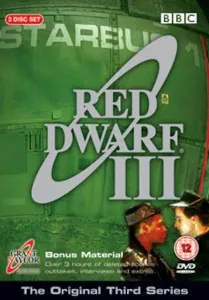

The genetics
Genetics is a one-line explanation for the monster: Kryten and Holly identify the Polymorph as a man-made genetic mutant, designed to leech off negative emotions and able to take any shape. Nobody explains who made it or why, and no scientist appears; the creature simply arrives from a space waste pod. The story uses the premise to play with the crew's personalities, showing what Lister, the Cat, Kryten and Rimmer become without their fear, vanity, guilt and anger, and suggesting that these emotions are part of who they are. The engineered creature is a pure threat that attacks the crew until it is destroyed, and the original broadcast ends with a second one at large. Shape-shifting, emotion-eating organisms are comic science fiction with no basis in real genetics; the episode is often ranked among the series' best.
How genetics is portrayed
- Overall portrayal of genetics
- negative The only product of genetic work is a predatory monster from a waste pod, and the original episode ends on an ominous joke with a second Polymorph following the crew.
- Outcome of the genetic intervention
- negative The engineered mutant attacks the crew, drains Lister's fear, the Cat's vanity, Kryten's guilt and Rimmer's anger, and nearly kills them; in the original broadcast a second one remains at large.
- Unknown creators of the Polymorph
- neutral Aim: not stated (not applicable). Kryten and Holly identify the Polymorph as a man-made genetic mutant designed to feed on negative emotions, but the episode never shows or names its makers or says why they made it.
The story
A shape-changing creature escapes from a waste pod drifting in space and boards the mining ship Red Dwarf. Rimmer dismisses Holly's alert, and the creature attacks Lister at dinner. Kryten and Holly explain that it is a Polymorph, a man-made genetic mutant that feeds on its victims' negative emotions; it has drained Lister's fear, leaving him reckless. While trying to escape, the others are tricked one by one: the Cat loses his vanity, Kryten his guilt and Rimmer his anger, each becoming a changed and weakened person. The crew finally corner the Polymorph in the cargo decks and kill it by luck, thanks to a heat-seeking bazookoid shot, and recover their emotions. Unknown to them, a second Polymorph has come aboard and follows them disguised as Lister; in the 1998 remastered version a caption says it hid in Lister's underpants drawer and died of old age.